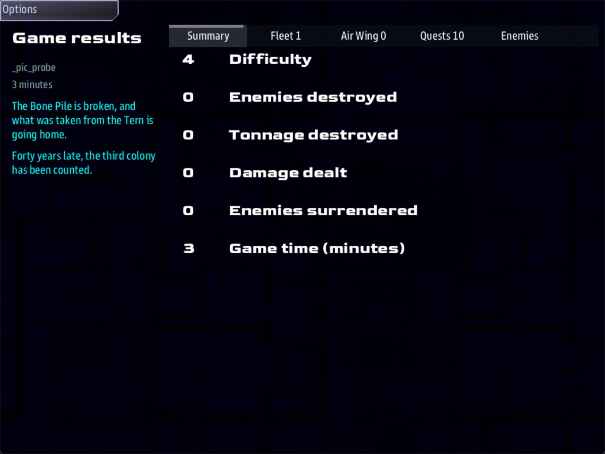

Class 5, Lecture 16 - Capstone: a playable universe¶
What you will have at the end¶
One evening of play in your own universe, planned on paper and then checked from the first card to the last, in two sittings with a save between them. A card at the top of your main file that says who the game is for and what it asks of them. And an honest list of what your universe does not do yet.

The end of the evening: your goal's own sentence, and its citation under it.This lecture teaches no new record and no new card. It asks you to finish. You write ten lines of notes, type two commands you know, and play your story twice: once reading this page, and once with a crew.
The worked example is The Kestrel Verge. Yours will be different. Use the example to see what a finished check looks like.
The video¶
About 5 minutes. Subtitles are available in the player.
Before you start¶
- Your
MyUniversemission as Lecture 13 left it.story.mastmatchesc5-13-battles-part-2\example\;kestrel_verge.amdandsettings.yamlmatchc5-12-battles-part-1\example\. Lecture 14 worked in a copy of another mission and changed nothing here. sbs lint MyUniversesayscleanfor all six files.- The game closed, and the save deleted:
C:\Cosmos\data\missions\common_data\saves\universe_save_the_kestrel_verge_1.yaml. - A crew for the last step: three people, or one patient friend. You can do everything before that alone.
This capstone needs none of Lectures 10, 11 and 15.
- If you took Lecture 15, your
kestrel_verge.amdsaysMode: campaignand has four chapters at its end. Both sittings on this page were walked again with them in the file and nobody in the Admiral's seat. Every row was the same. - If you took Lecture 11, your universe has a ruin in it, and three things on this page read differently for you. Lecture 11's last section lists them.
- If you took Lecture 10, your universe has two boarding sites in the home system, and three things on this page read differently for you. Lecture 10's section "What changes in later lectures" lists them. This page's two sittings were not walked again with the sites in the file.
This page leans on earlier ones and does not explain them again.
| Lecture | What you built there |
|---|---|
| 2 | The universe file, the travel lines, the save and Continue |
| 3 and 4 | Three sides, and what moves a crew's standing with each |
| 5 | Regions and landmarks |
| 6 | Jobs |
| 7 | The story: leads, a chain, a goal with Win: |
| 8 and 9 | Captains, the cast, and the files in their final shape |
| 12 | Difficulty, guards and the budget |
| 13 | The battle line at The Bone Pile |
Words for this lecture:
| Word | Meaning |
|---|---|
| Sitting | One evening of play, from starting the game to closing it |
| Run-through | Playing your own story with a list in your hand, checking each thing as it happens |
| Session card | A note at the top of your main file: who the game is for, and what it asks of them |
Step 1 - Plan the evening on paper¶
Do not start the game yet. Write down where a crew will go, in order, and what should happen at each place. Use this table. The third column is the lecture that built it, so that when a row fails you know where to look.
| Place | What should happen | Built in | |
|---|---|---|---|
| 1 | Kestrel Relay, 0, 0 |
The crew hails the Compact, pays the levy, takes a job | 3, 4, 6 |
| 2 | The Tern, 1, -2 |
A guard. The first lead closes and the ledger step appears | 5, 7, 12 |
| 3 | Assay Office, 3, 1 |
The job pays. The crew asks about the Tern, and the ledger step closes | 5, 6, 7 |
| Close the game. The first sitting ends here | 2 | ||
| 4 | Assay Office again | Continue. Everything is as it was left | 2 |
| 5 | The Bone Pile, -4, -3 |
Guards, and the battle line. The last lead closes and the goal opens | 12, 13 |
| 6 | The Bone Pile | Four Gleaner ships destroyed. The game ends with your Win: sentence |
7 |
Three rules for a plan like this:
- One sitting, three places. Every place has a line to read on Comms, a station to talk to or a fight to have. Three is an evening.
- End a sitting somewhere safe. The save keeps the system the crew is in. The Assay Office is a friendly port. The Bone Pile is not a place to wake up in.
- Put the save between the mystery and the fight. The crew leaves knowing where to go next. That is the best reason to come back.
Step 2 - Write the session card¶
Open kestrel_verge.amd. At the very top, above the first line, add these lines and one
empty line after them. A line that starts with two slashes is a note. The game does not
read it.
// ---- The Kestrel Verge: session card. Keep this true.
// CREW One ship, new to the game. DIFFICULTY 4, "Quiet", "Dormant".
// BUDGET Worst system: The Bone Pile. 4 Gleaners + 3 guards + a battle line of 4 or 5.
// 12 hostile ships, for one crew.
// SITTING 1 Kestrel Relay (the levy, a job) -> The Tern -> Assay Office (the ledger).
// SITTING 2 Continue at Assay Office -> The Bone Pile -> Break the Bone Pile.
// WORDS signal ledger_read sent in dialogue\deepwell.amd, waited for by tern_ledger
// key goal_bone_pile named on the card at the end of story.mast
// system -4, -3 The Bone Pile's At:, and the two numbers on that card
//
| Line | Why it is there |
|---|---|
CREW |
Lecture 12's three dials, in one place. Whoever runs the game reads this first |
BUDGET |
Lecture 12's sum, with Lecture 13's battle line added |
SITTING |
Your plan from Step 1, short enough to read at a glance |
WORDS |
Every word that has to match in two places. Lint checks the first of these three for you. It cannot check the key or the two numbers on the card in story.mast. When you rename one, this is the list of where else to go |
Step 3 - Before you play¶
Four checks, in this order.
| Check | Right answer |
|---|---|
| Lint | clean for all six files, and 6 amd + 1 mast file(s): 0 error(s), 0 warning(s) |
| The save | universe_save_the_kestrel_verge_1.yaml is not in common_data\saves. A run-through starts from a new game |
| The dials | Line 53 of settings.yaml and the two card lines in story.mast say what your session card says |
| The libraries | sbs fetch "MyUniverse" --update-libs has been run since you last updated the tool |
Step 4 - The run-through, first sitting¶
Play down this table. The last column is what the game was asked to show when this story was walked by script. Tick each row, or write what you saw instead.
| Do | You should see | Tick | |
|---|---|---|---|
| 1 | Nothing yet. Read Comms | Kestrel Relay, and "Location charted: Kestrel Relay" | |
| 2 | Helm: open the Quest Log | Three leads: The Second Colony, The Breaking Yard, The Third Colony. Under Charted Locations: Kestrel Relay | |
| 3 | Comms: select Hollin Compact | Six buttons. Among them Hail Hollin Compact, Hail Edda Brake, the Relay Warden and Escort (250 cr) | |
| 4 | Comms: Hail Hollin Compact, then Pay the relay levy | "Paid and entered. The relay stays lit another month, and we know who lit it." The ship's credits go from 500 to 400 | |
| 5 | Comms: select Hollin Compact again | Patrol (240 cr) is there now, and the escort pays more: Escort (300 cr) | |
| 6 | Comms: Escort (300 cr) | The Quest Log has a Ship section, with Hollin Compact: Escort | |
| 7 | Helm: Engage The Third Colony | On Comms: The Tern, then a Threat line: "The Tern is guarded - hostiles on approach." One or two raiders are out by the wreck | |
| 8 | Helm: the Quest Log | The Third Colony is Done. The Assay Ledger has appeared. The Tern is under Charted Locations | |
| 9 | Helm: Engage The Second Colony | Assay Office. The escort is Done, and credits are 700 | |
| 10 | Helm: Engage Assay Office under Charted Locations - it is far out, beyond what Comms shows. Then Comms: select Assay Office, Hail Deepwell Assembly | Three answers, the first of them Pay the search fee and ask about the Tern | |
| 11 | Comms: Pay the search fee and ask about the Tern | "Fee received. Forty crates off the Tern, entered as salvage, sold to us by the Gleaners." Credits are 750: the fee was 150 and the step paid 200 | |
| 12 | Helm: the Quest Log | The Assay Ledger is Done. What the Gleaners Keep has appeared |
In row 7 you may find a job you did not write. In the game this was measured in, The Tern's system was an anomaly, and the game handed the crew an Anomaly Signal to follow. It is the game's own, and it is different in every new game.
Now close the game. All three windows.
Step 5 - The run-through, second sitting¶
Start the game with the same line. Do not delete the save.
| Do | You should see | Tick | |
|---|---|---|---|
| 13 | Nothing yet | The crew is at Assay Office, where they stopped. Credits are 750 | |
| 14 | Helm: the Quest Log | As row 12 left it. Three places under Charted Locations | |
| 15 | Helm: Engage What the Gleaners Keep | Three lines on Comms: The Bone Pile; "The Bone Pile is guarded - hostiles on approach."; and yours, "A Gleaner battle line is forming up between you and the Bone Pile." Credits are 1150 | |
| 16 | Weapons or Helm: count | Three guards by the wreck, and the battle line of four or five close by. If this game made The Bone Pile an enemy system, Gleaner fleets wait far off as well (four ships in the game Lecture 12 counted). Seven to twelve hostile ships in all | |
| 17 | Helm: the Quest Log | What the Gleaners Keep is Done. Break the Bone Pile has appeared | |
| 18 | Weapons: destroy four Gleaner ships | The game ends. The end screen has your sentence, "The Bone Pile is broken, and what was taken from the Tern is going home.", and your citation under it: "Forty years late, the third colony has been counted." |
Row 18 is the one row nobody has played. In the check behind this page a script told the game that four Gleaner ships had been destroyed, and the game ended as the row says. No weapon was fired. Whether one light cruiser can win this fight is what your crew is for.
Step 6 - After you play¶
Three things to read while the evening is fresh.
| Read | It should say |
|---|---|
MyUniverse\mast.runtime.log |
Nothing. An empty file. Any line in it is something that went wrong where you could not see it |
| Your ticks | Every row ticked, or a note. A note is not a failure. It is the next thing to fix |
| The three standings | With the Compact, 25. With the Assembly, 20. With the Gleaners, 0. Those are from paying the levy, finishing the escort and paying the fee |
When a row fails, the lecture in Step 1's table is where to look, and its "If something goes wrong" table is the first thing to read.
Step 7 - What this universe does not do yet¶
A capstone is also a list of what is missing. Each of these was measured during this class. None of them is your mistake, and each is on the list the game's makers work from. Three rows that used to be here are gone, because they are mended: a story beat can move a crew's standing now (Lecture 7), the crew can board a place (Lecture 10), and your own universe can have an Admiral (Lecture 15).
| It does not | What you do meanwhile |
|---|---|
| Balance an Admiral's economy. Your universe can have an Admiral now (Lecture 15), and the game still multiplies every stock and yield by eight | Write the numbers your story suggests. Tune them when the test setting is gone |
| Let a story move on because of something the Admiral did. Nothing the Admiral builds or researches sends a signal a quest can wait for (Lecture 15) | Keep the Admiral beside the story, not in it |
Turn a captain into a rival with Rival when: (Lecture 8) |
Build the rival from guarded lines and answers, as Lecture 8 does |
| Tell you how the crew reaches Kestrel Traffic on Comms (Lecture 9) | Find it on a real screen, and write it on your session card |
The capstone rubric¶
Mark yourself. Ten points make a universe you can put in front of a crew.
| Worth | You have it when | |
|---|---|---|
| 1 | 1 | The session card is at the top of the main file, and every line of it is true |
| 2 | 1 | Lint says clean for every file |
| 3 | 1 | mast.runtime.log is empty after both sittings |
| 4 | 2 | Every row of your first sitting is ticked |
| 5 | 1 | The second sitting starts where the first one stopped, with the same credits and Quest Log |
| 6 | 2 | The last fight is there when the story arrives, and is not there for a crew that wanders in early |
| 7 | 1 | The game ends with your own Win: sentence |
| 8 | 1 | A crew that is not you has played a sitting, and you watched without helping |
If something goes wrong¶
| What you see | Likely cause |
|---|---|
| Row 4: no Pay the relay levy | The Hollin hail's answers. Lecture 4, and dialogue\hollin.amd |
| Row 5: no Patrol after the levy | The job's Tier:, or the levy's earns. Lectures 4 and 6 |
| Row 8: The Assay Ledger does not appear | Then: reveal tern_ledger on The Third Colony. Lecture 7 |
| Row 11: the ledger step does not close | The word after signal is not the same in dialogue\deepwell.amd and in kestrel_verge.amd. It is on your session card |
| Row 13: a new game, back at Kestrel Relay | The save was deleted between sittings, or the universe's title changed. Lecture 2 |
| Row 15: no battle line | Lecture 13's "If something goes wrong". Start with the key and the two numbers on your session card |
| Row 15: the battle line was there on an early visit too | The ->END if not quest_is_active line. Lecture 13 |
| Row 18: the game does not end | The goal has no Win: line. Or fewer than four hostile ships have been destroyed since the goal opened: look at the goal in the Quest Log. Lecture 7 |
Exercise¶
- Fill in Step 1's table for your own universe: two sittings, three places each.
- Write your session card. Under
WORDS, list every signal, every key named instory.mast, and every pair of numbers that appears in two files. - Turn your plan into a run-through table like Steps 4 and 5: what to do, and what you should see. Write the "should see" column before you play, from your files.
- Play both sittings alone and tick the rows.
- Give the game to a crew. Sit behind them with the table. Do not help.
- Mark the rubric.
Checkpoint¶
You are done when all four are true:
- Your session card is at the top of your main file.
- Both sittings of your run-through are ticked, and
mast.runtime.logis empty. - Your rubric adds up to eight or more.
- You have written down, in one sentence, the first thing you will change.
Next¶
Class 6 is the long game: a campaign told over twenty sittings, what the save carries from one to the next, and how to publish a universe for people you will never meet.
Further reading¶
- Lecture 12 of Class 1, "Ship a quest mission": how to zip a mission and send it to a friend. It works the same for a universe.
sbs docs MyUniverseandsbs site MyUniverse --emit site, from Lecture 9: print the world before you hand it over.- "Troubleshooting" in the Open Universe writer's walkthrough.
Download this lecture's finished files (a zip of its example folder).